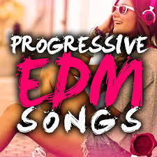
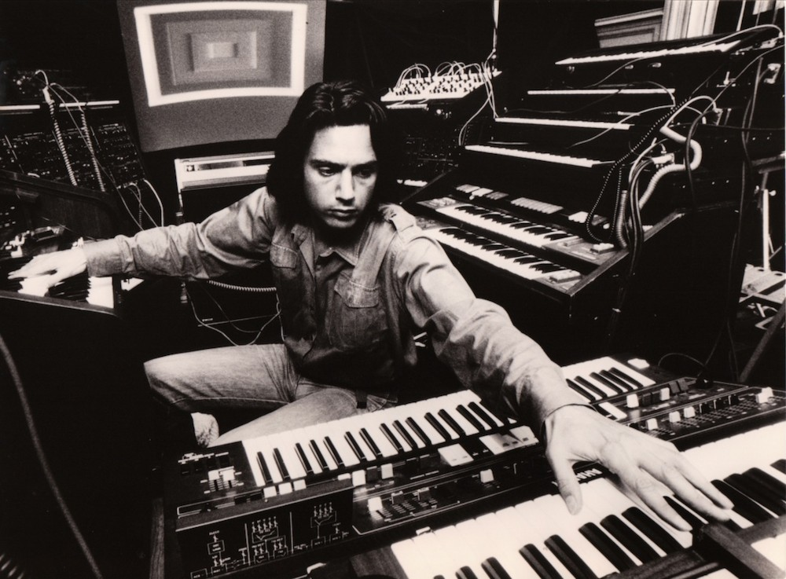

트랜스 음악의 하위 장르인 프로그레시브(Progressive)는 90년대 초중반에 영국에서 탄생했다.
2000년대 들어 트랜스 DJ들이 일반 트랜스보다 다소 느린 곡들을 믹스셋에 넣으면서 대중들에게 알려지기 시작했는데, 프로그레시브는 진보적이다라는 사전적 정의에서 비롯된 장르이다.
하우스의 리듬을 차용해서 그루브한 라인을 타는 것이 추세라고 한다. 국내에서 인정받는 트랜스 메탈 밴드로는 예레미가 있다.
‘나는 가수다’에서 박완규의 곡들을 편곡하고 기타 연주를 하던 조필성이 이끌고 있는 록 밴드이고 대중들에게는 많이 알려져 있지는 않지만
국내 록 음악계와 음악 평론가들, 록 팬들 사이에서는 인정받고 있는 팀이다.

J ean-Michel Jarre. 프로그레시브계의 대부
프랑스 출신의 초창기 일렉트로니카 뮤지션이다. 현역으로 따지면 역시 당시 일렉트로니카 선풍을 몰고온 독일의 크라프트베르크와 자웅을 겨루었던 아티스트. 영화음악가인 모리스 자르(Maurice Jarre)의 아들로도 잘 알려져 있다.
80년대~90년대 뉴스, 광고나 다큐 같은 시그널 곡에 이 사람의 음악이 꼭 들어갔다고 해도 과언은 아니다. 많은 일렉트로니카 뮤지션들이 그러하듯이 얼굴이나 이름은 몰라도, 음악을 들으면 대번 어? 나 이 음악 들어본 것 같은데? 한 반응이 나오게 만드는 대표적인 주자라 할수 있다. 본 활동무대인 유럽에서도 다양한 대중매체에서 배경음악으로 쓰인다고 한다.
장 미셸 자르의 놀라운 연주 듣기